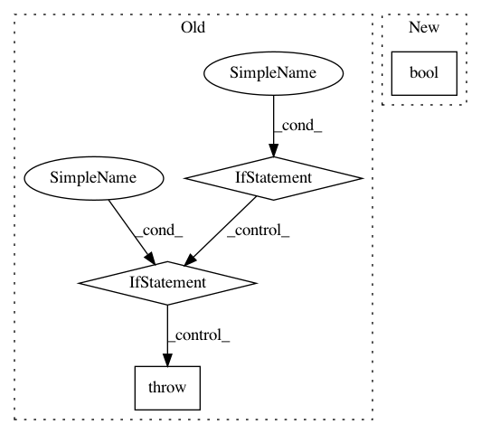

c990ac06aafcb8ee6fae7d013e4eb3091012facc,AutoSklearn/components/classification/liblinear.py,LibLinear_SVC,fit,#LibLinear_SVC#Any#Any#,25
Before Change
self.C = float(self.C)
self.tol = float(self.tol)
if self.dual == "False":
self.dual = False
elif self.dual == "True":
self.dual = True
else:
raise ValueError("Parameter dual "%s" not in ["True", "False"]" %
(self.dual))
if self.class_weight == "None":
self.class_weight = None
self.estimator = sklearn.svm.LinearSVC(penalty=self.penalty,
After Change
self.C = float(self.C)
self.tol = float(self.tol)
self.dual = bool(self.dual)
self.fit_intercept = bool(self.fit_intercept)
self.intercept_scaling = float(self.intercept_scaling)
if self.class_weight == "None":
In pattern: SUPERPATTERN
Frequency: 3
Non-data size: 4
Instances
Project Name: automl/auto-sklearn
Commit Name: c990ac06aafcb8ee6fae7d013e4eb3091012facc
Time: 2014-12-12
Author: feurerm@informatik.uni-freiburg.de
File Name: AutoSklearn/components/classification/liblinear.py
Class Name: LibLinear_SVC
Method Name: fit
Project Name: senarvi/theanolm
Commit Name: 22a25a30d9a7fca19e6ca59c5b6ee82241e126df
Time: 2016-01-18
Author: seppo.git@marjaniemi.com
File Name: theanolm/network.py
Class Name: Architecture
Method Name: from_description
Project Name: tensorflow/datasets
Commit Name: 77215c41d87a1c8d4a3b1ce51aceec1f7e1f2be9
Time: 2018-11-28
Author: epot@google.com
File Name: tensorflow_datasets/core/features/class_label_feature.py
Class Name: ClassLabel
Method Name: __init__